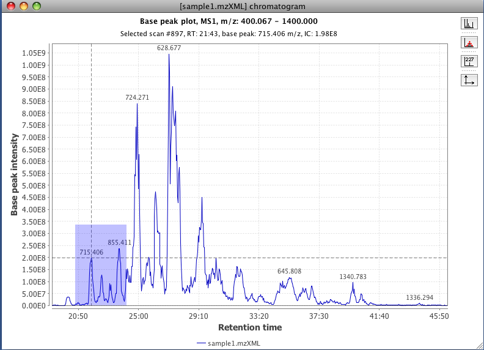

This tool displays a two-dimensional plot, where the x-axis corresponds to retention time and the y-axis is the intensity level of the signal. This visualization of the raw data corresponds to the chromatographic appearance of the data.
This type of plot is generally used in MZmine to display chromatographic peaks.
Additionally, the parameters window has a Set automatically button that allows you to set all the ranges to the maximum ranges represented in the raw data.
The following zoom functions are available:

To the right of the plot is a set of buttons whose functionality is also available via a pop-up menu that appears when you click the right-mouse button in the plot area.
When the mouse cursor passes over a plot line or peak, a tool-tip is displayed with information about the data point. Left-clicking will select a data point in the plot. Using the top button from the right panel it is possible to visualize the mass spectrum for the selected data point. Double-clicking near a data point will have the same result.
Use the second button on the right panel to display a marker for each data point.

Use the third button on the right panel to display labels on the data points. By default m/z labels are displayed for major peaks. If the plot includes selected peaks from a peak list then those peaks can be labeled with their identities. Pressing the labels button will cycle between displaying m/z labels, peak identity labels (if any) or no labels.
Use the fourth button in the right panel to manually modify the axis ranges.
It is possible to display data from other raw data files by using the Add plot of file... item from the pop-up menu.


The pop-up menu also includes a Set same range to all windows item, which applies the same ranges to all TIC plot windows in the current project.
The submenu also includes an Export chromatogram... item that allows you to select a chromatogram to export. Choose a chromatogram and you'll be prompted to select a file name to export the chromatogram values (RT, intensity) to.